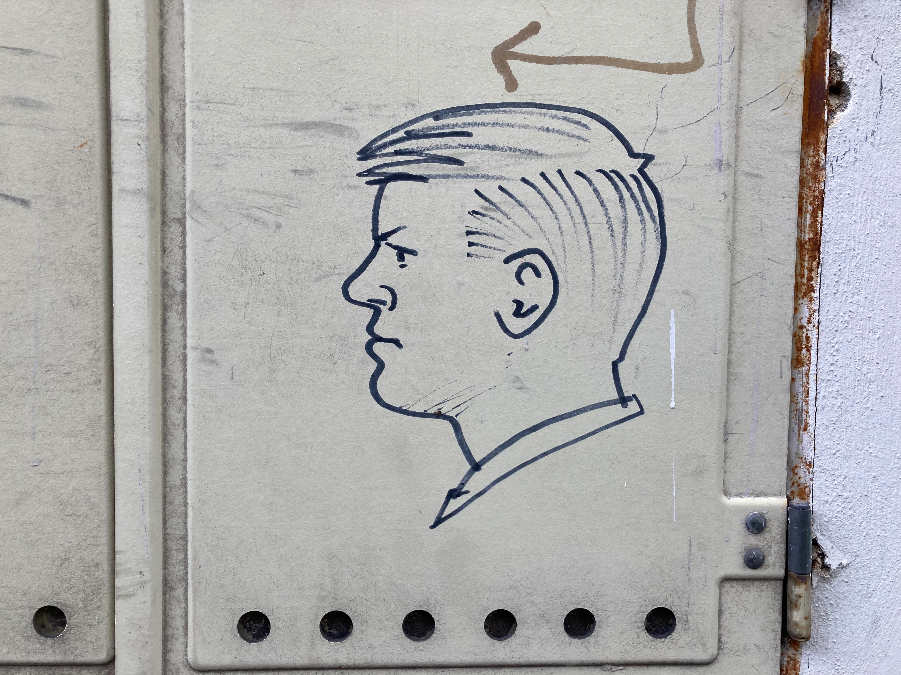

I've been doing urban strolls around Vienna since early 2021. I started noticing graffiti showing side profiles of human subjects. Guys only. Left side only. Typically done with a black marker on the door of some utility box. Likely all by the same artist who prefers to contribute anonimously to the Viennese cityscape.
The above map shows the locations where I found them. Zoom in and click on a marker to find the exact location, the datetime I observed them, as well as links to pictures I took. Like the one below.
Maybe you would like to go see these graffiti in person. Because you've already endured all the beauty of Vienna's First and start wondering what it's like in other Districts. If so, launch this version of the above map, click on the GPS icon that sits on the left below the +/- zoom icon, and allow the website to use your location info. Or, if you have a preferred GPS app, upload this KML file file to it. Then get your own urban stroll going, and while you're at it, enjoy a Bratwurst or Döner Kebab; the waiting times tend to be significantly shorter than for that Sacher Torte the guide told you to have.
Some graffiti are likely gone by now but maybe you'll find new ones because the artist remains active. If you do, consider emailing LeftistVienneseDudes@proton.me. Send geo-located pictures or pictures with geo-location information seperately included in the mail. I will happily add your observation(s) to the map and ping you once that's done.

The Leftist Viennese Dudes information is provided for your personal enjoyment, no strings attached. However, I would like to emphasize that I'm not liable for unpleasant things that may happen while you're urban strolling, including being run-over by a scooter, harassed by a magazine seller, ignored by a waiter, suffocated by a cigarette mob, or stink-eyed by a local.